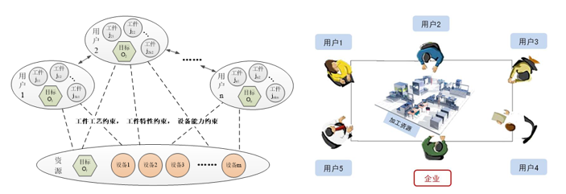
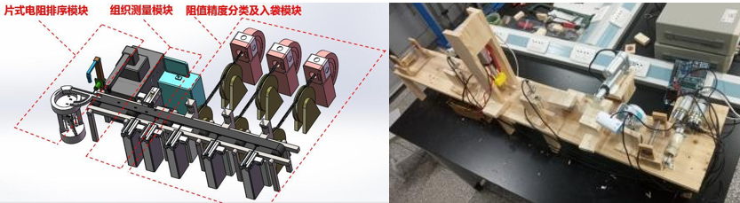
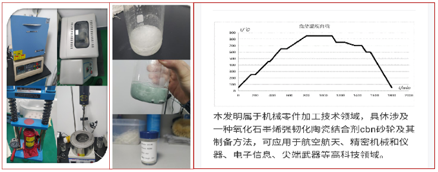
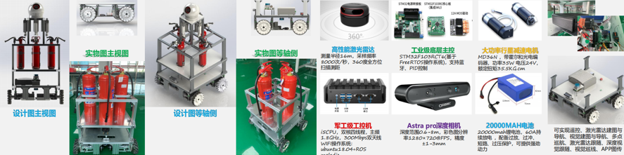

基本信息
- 姓 名: 饶文浩
- 政治面貌: 中共党员
- 学 历: 硕士研究生
- 籍 贯: 安徽省铜陵市
- 电 话: 15535392818
- 电子邮件: rwh15535392818@163.com(最佳联系方式); raowh@mail.nwpu.edu.cn
本人研究方向包括：作业车间调度（JSP）、多目标优化、Mulit-Agent、离散优化。
目标岗位为：机械类、智能制造类
A beautiful song "带你去找夜生活" is send to you.
教育背景
- 09/2021-至今: 西北工业大学（985、211）机械类 工学硕士学位
- 09/2017-07/2021: 中北大学（兵工七子）-工业工程 工学学士学位
- 09/2014-07/2017: 铜陵市第一中学 高等中学
科研项目
项目 1：车间数字化单元 MES 环境下 APS 的研究与应用 2021.09-2022.10 参与人
- 1.建立了确定性环境下作业车间 JIT 调度问题优化模型，以遗传算法为基础设计了三阶段解码遗传算法求解该问题；
- 2.针对作业车间实际生产中普遍存在的机器故障不确定性因素，以尽可能减少重调度对既定零部件生产现场秩序的影响为目标，构建了机器故障条件下的作业车间稳定性调度优化模型，并设计了受影响工序重调度算法；
- 3.以本研究中设计的算法为基础，基于.NET 平台开发可视化作业车间调度软件，以指导车间实际生产。
- 1.针对各代理自治、自利的特性，基于进化算法与博弈论的相关理论研究设计求解多代理多目标优化问题，以期探索各代理满意解决方案；
- 2.基于 Python 平台进行仿真实验，以指导实际应用。
- 3.以本研究中设计的算法为基础，基于Pycharm平台开发可视化作业车间调度软件，以指导车间实际生产。
- 主要负责团队统筹协调工作，以及系统的机械结构设计、图像处理部分、设备采购选型等工作。
- 1.参与了文献调研、数据收集与分析；
- 2.负责实验器材和原料的采购；
- 3.参与实验全过程，并进行实验改进;
- 4.负责了项目结题汇报；
- 5.参与专利的撰写。
- 1.利用 SolidWorks 建立仓储环境及搬运车的三维模型，对结构方案进行比较和优化，完成机器人结构的设计；
- 2.采用 ANSYS 软件对机器人模型进行有限元分析，保证机器人在灭火过程的稳定性；
- 3.对机器人的运行机构进行样机控制实验。
- “优秀研究生”, 西北工业大学, 2022.
- “优秀毕业生”, 中北大学, 2021.
- “优秀共青团干部”（2 次）, 中北大学, 2019/2020.
- “优秀学生干部”, 中北大学, 2020.
- “三好学生”, 中北大学, 2019.
- “优秀共青团员”, 中北大学, 2018.
- 校设二等奖学金, 西北工业大学, 2022.
- 二等奖学金, 西北工业大学, 2022.
- 一等奖学金, 西北工业大学, 2019/2020.
- 国家奖学金, 中北大学, 2020.
- 综合素质一等奖学金（4 次）, 中北大学, 2018/19/20/21.
- 第十五届工业工程竞赛一等奖, 西北工业大学, 校级/2023.
- 第十九届研究生数学建模竞赛二等奖, 中国学位与研究生教育学会, 国家级/2022.
- 陕西省第十三届工业工程创意改善竞赛一等奖, 陕西省机械工程协会, 省部级/2022.
- 第十四届工业工程竞赛一等奖, 西北工业大学, 校级/2022.
- “人人讲党史”演讲比赛三等奖, 西北工业大学机电学院, 院级/2021.
- 美国大学生数学建模竞赛二等奖, 美国数学应用协会, 国际级/2020.
- 全国大学生数学建模竞赛国家级二等奖, 中国数学应用协会, 国家级/2019.
- None.
- None
- None
- None
- R. Li, W. Gong*, L. Wang*, C.Lu, Parasitc Evolution with Deep Reinforcement learning For Energy-Aware Distributed Heterogeneous Flexible Job Shop Scheduling Problem, IEEE Transctions on Systems, Man, and Cybernetics: Systems. R1-Under Review.
- R. Li, W. Gong*, L. Wang*, C.Lu, Discover Surprisingly Popular Neighborhood Sturcture For Energy-efficient Distributed Flexible Job Shop Scheduling, IEEE Transctions on Cybernetics. R1.
- R. Li, W. Gong*, C. Lu*, Two-stage knowledge-driven evolutionary algorithm for distributed flexible job shop scheduling problem with type-2 fuzzy processing time, Swarm and Evolutionary Computation. 2022,74,101139.(T1).
- R. Li, W. Gong*, L. Wang, C.Lu, A Learning-based Memetic Algorithm for Energy-Efficient Flexible Job Shop Scheduling With Type-2 Fuzzy Processing Time, IEEE Transctions on Evolutionary Computation. May, 2022. Accepted (T1 Top, CCF-B).
- R. Li, W. Gong*, C. Lu, A reinforcement learning based RMOEA/D for bi-objective fuzzy flexible job shop scheduling, Expert System With Application. 2022, 203, 117380 (T2).
- R. Li, W. Gong*, C. Lu, Self-adaptive multi-objective evolutionary algorithm for flexible job shop scheduling with fuzzy processing time, Computers & Industrial Enginering.. 2022, 168, 108099 (T2).
- 李瑞, 王凌, 龚文引*, 知识驱动的模因算法求解分布式绿色柔性调度, 华中科技大学学报（自然科学版）. 2022, 50(06):55-60. (EI index)
- 李瑞, 龚文引*, 改进的基于分解的多目标进化算法求解双目标模糊柔性作业车间调度, 控制理论与应用. 2022, 39(1): 31 - 40. (EI index)
- None.
- 研究生国家奖学金, 中国地质大学(武汉), 10/2022.
- 优秀共青团员, 中国地质大学(武汉), 05/2022.
- 第十八届“华为杯”全国研究生数学建模竞赛B题三等奖, 中国学位与研究生教育学会, 12/2021.
- 研究生国家奖学金, 中国地质大学(武汉), 10/2021.
- 第十七届“华为杯”全国研究生数学建模竞赛D题三等奖, 中国学位与研究生教育学会, 12/2020.
- 国家励志奖学金, 中国地质大学(武汉), 11/2019.
- 第二届国产并行CPU挑战赛(CPC)赛区一等奖, 中国地质大学（武汉）地大2队, 中国计算机学会, 08/2018.
- 第六届“英特尔杯”并行应用挑战赛(PAC)并行基金将, 中国地质大学（武汉）地大2队, 中国计算机学会高性能计算专业委员会, 08/2018.
- 优秀共青团员, 中国地质大学(武汉), 05/2018.
- 校长奖学金, 中国地质大学(武汉), 11/2017.
- 优秀共青团员, 中国地质大学(武汉), 05/2017.
- 国家重点研发项目，"复杂施工环境下大型工程装备设计/制造/运维一体化平台研发与应用"，课题二"不确定环境下工程装备供应链动态协同与智能柔性排产方法"，骨干成员，2021YFB3301602, 2021.12-2024.11
- Prof. 王凌 (我的博士生导师, 清华大学教授, 博士生导师，国家杰出青年基金获得者)
- Prof. 龚文引 (我的研究生导师, 中国地质大学(武汉)教授, 博士生导师，湖北省杰出青年基金获得者)
- 卢超 (我的研究生第二导师, 中国地质大学(武汉)副教授, 硕士生导师)
简介：本项目聚焦车间执行层面的工段（或生产线）优化排程核心业务，补齐目前 MES 软件缺乏核心排程模块的短板，拓展 MES 现有功能，真正实现计划拉动整个车间及工段并行化、高效化、均衡化生产。
主要职责：
项目 2：制造单元多代理协商调度优化方法研究（国家自然科学基金） 2021.09—至今 核心成员
简介：本项目聚焦个性化定制生产之亟需，针对新型信息技术条件下制造单元生产环境，将每个用户和资源等价成不同代理，以实现用户个性化目标为主导，以用户主动参与调度决策过程为手段、以协商优化模式为突破点，开展制造单元多代理调度问题研究。
主要职责：

项目 3：片式电阻自动分拣系统设计（大学生创新创业计划） 2022.03—2022.10 负责人
简介：本项目旨在设计一套片式电阻自动分拣系统，由机器取代人工，解决目前工厂所面临的效率低下，片式电阻质量无法得到有效保障这些问题，减少人力和物力的投入，并且实现片式电阻按精度分类，达到提高工厂的经济效益的目的。
主要职责：
成果：荣获陕西省第十三届工业工程改善创意竞赛省级一等奖。

项目 4：氧化石墨烯强韧化陶瓷结合剂 CBN 砂轮制备方法研究（山西省青年基金） 2019.04—2020.11 核心成员
简介：针对现有技术和实际情况的不足，提供了一种溶胶-凝胶法制备氧化石墨烯强韧化陶瓷结合剂CBN 砂轮的方法，可以得到粒径更细小的结合剂，利用氧化石墨烯的纳米特性提高陶瓷砂轮的韧性与强度；在烧结过程中采用多阶段降温的方式，减少了砂轮胚体的开裂，提高了砂轮的成品率。
主要职责：

项目 5：智能巡检消防机器人 2021.4-2021.12 参与人
简介：本设备利用多源传感器融合技术，实现对温度、气体浓度及火焰的实时检测。通过车载设备，可实现对巡检场地的烟雾有毒有害气体、起火点等进行快速精准识别，适用于多种应用场景。此外搭建自动巡航控制平台实现自主规划最优路径、自主行驶及避障。
主要职责：
